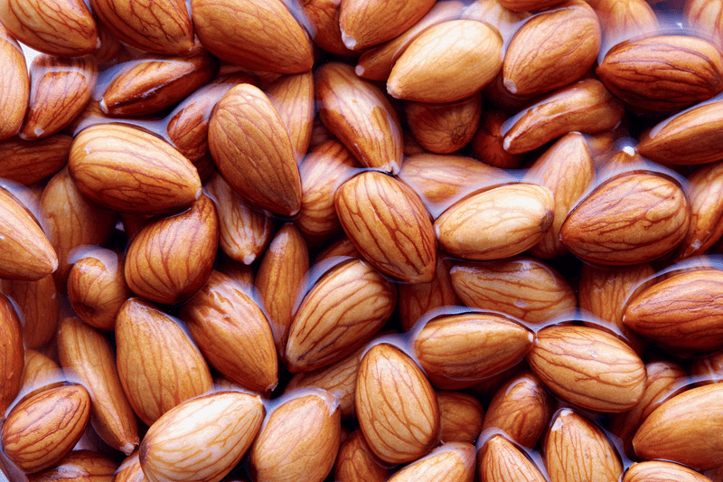
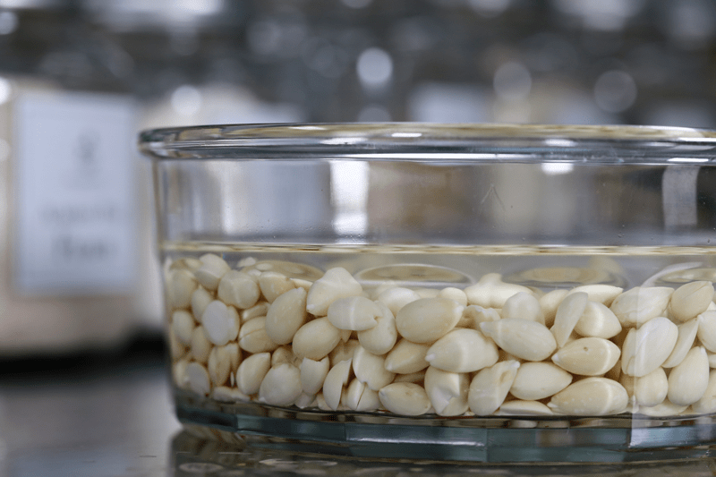

#2 – Do I HAVE to Soak Nuts & Seeds?
Do I HAVE to soak nuts, seeds, and grains? All this soaking and dehydrating makes food preparation so hard and time-consuming! I get this question often and hear this complaint even more so.
I would love to be standing in a beautiful meadow of delicate yellow flowers, surrounded by the impressive Austrian Alps, spinning with my arms stretched out in adoration of my surroundings and life itself… singing… “The nuts are alive, please soak them…. lalala” (think
Sound of Music), but the truth is you don’t HAVE to. Only personal experience will help you to decide if this method is helpful to you.
The soaking technique is highly promoted in the raw food movement simply because the standard raw vegan diet relies heavily on nuts and seeds. All edible seeds, grains, legumes, and nuts contain phytic acid in varying quantities, and can even be found in small amounts in root veggies and tubers. So, if these foods make up a significant portion of your caloric intake, soaking will prove very useful.

Generally, a healthy digestive system will tolerate a certain amount of phytic acid and a varied diet (key factor… varied diet) will compensate for the actions of enzyme inhibitors without a problem. The chief concern about phytates is that they can bind to certain dietary minerals including iron, zinc, manganese and, to a lesser extent calcium, and slow their absorption. (
source) Phytates also reduce the digestibility of starches, proteins, and fats. If you have any existing deficiencies in any of these… you will want to adapt to this soaking technique to your culinary skills. To learn about soaking specific nuts and seeds, please click (
here) to learn more.
Some seeds contain substances such as
lectins and saponins, which can interfere with the lining of the GI tract. This can cause damage to the cellular lining and the villi (small brushlike projections in the intestines), leading to leaky gut and poor overall nutrient absorption.
Culinary Reasons To Soak Nuts
This process is more than just for health benefits… there are culinary reasons as well. Soaking nuts and seeds help to soften them for blending and textural purposes. You can create raw, vegan, creamy nut milks, puddings, yogurts, cheesecakes, cheese, and so much more by soaking nuts and seeds first. Most high-powered blenders can do the job for you, but if you don’t own such a machine… SOAK!
Nouveauraw Recipes
So here’s the scoop, as you navigate your way through my recipe site, you will notice that I suggest soaking (and dehydrating) nuts, seeds, and grains in 99% of them. First and foremost my suggestion for doing so is for better health benefits. I believe in making every bite count, and that starts with each individual ingredient being used.
But there’s another reason for soaking the nuts, and that is texture. Depending on the recipe, the nuts might need to be really soft to create a creamy mouthfeel. Every ingredient, every method on my site may be viewed as a suggestion… you’re going to make adjustments to them as you see fit based on the availability of ingredients or time constraints. My main requirement for you is to always do the best with what you have.

Does soaking nuts and seeds affect the taste?
Even if your intention isn’t to eat an all raw vegan diet, I ask that you do an experiment with soaking and dehydrating (can use the oven too) and see what you think. The process changes the taste and texture, especially walnuts and almonds, giving them a more appealing taste after they are soaked and rinsed. After a couple of hours, the water will be brown as much of the dust, residue, and tannins from the skins are released into the water, and the nut emerges with a smoother, more palatable flavor.
You’ll notice that soaked walnuts do not have that astringent, mouth-puckering taste to them. This is because when soaking walnuts, the tannins are rinsed away, leaving behind a softer, more buttery nut. And once dehydrated they become light and really crisp.
Phytic Acid Health Benefits
You mean there are benefits to the very thing that we are trying to omit!? Our goal is to reduce phytic acid rather than eliminate it. To start off, phytic acid is used to safeguard the seeds/nuts until germination. Nature in action! But it also provides some health benefits, including an anti-inflammatory effect, may help prevent cardiovascular disease, lower a food’s glycemic load, and protect against kidney stone formation. There are a lot of studies out there on this topic, so do your research.
Other Methods that Help Reduce Phytic Acid
- Sprouting: The sprouting process also referred to as germination, causes phytate degradation.
- Fermentation: Organic acids, formed during fermentation, promote phytate breakdown.
- Use raw apple cider vinegar in salad dressings to enhance mineral absorption and offset phytic acid.
- Consume vitamin C-rich foods with meals that contain phytic acid.
Sources: 1, 2, 3, 4, 5,
Disclaimer
This website is not intended to provide medical advice. All content, including text, graphics, images, and information available on this site is for general informational, entertainment, and educational purposes only. The content is not intended to be a substitute for professional diagnosis or treatment. The author of this site is not responsible for any adverse effects that may occur from the application of the information on this site. You are encouraged to make your own healthcare decisions, based on your research and in partnership with a qualified healthcare professional.
© AmieSue.com